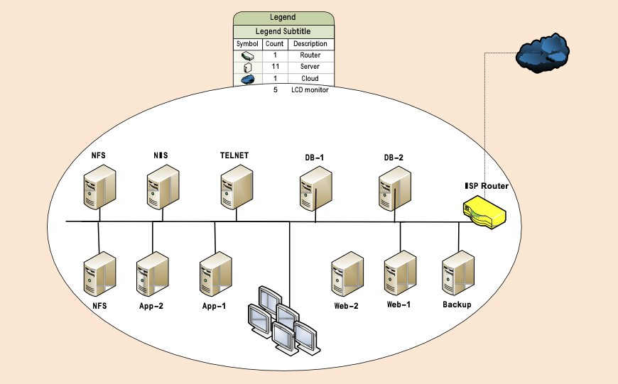
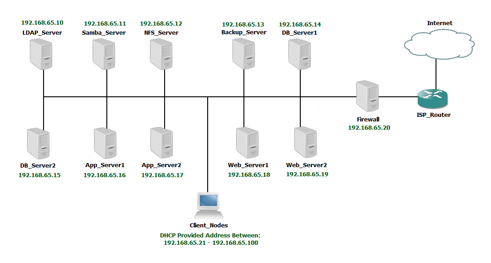
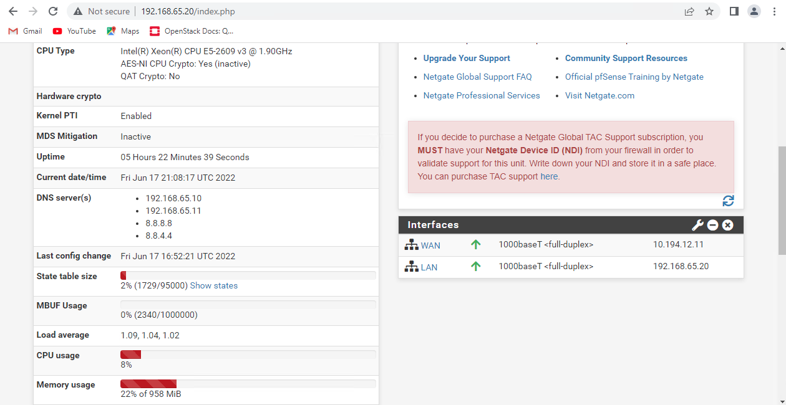
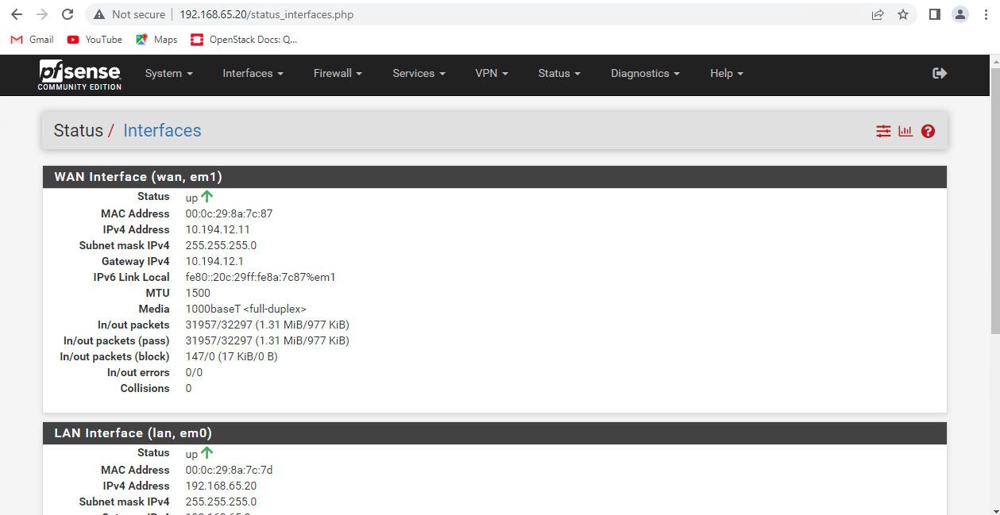
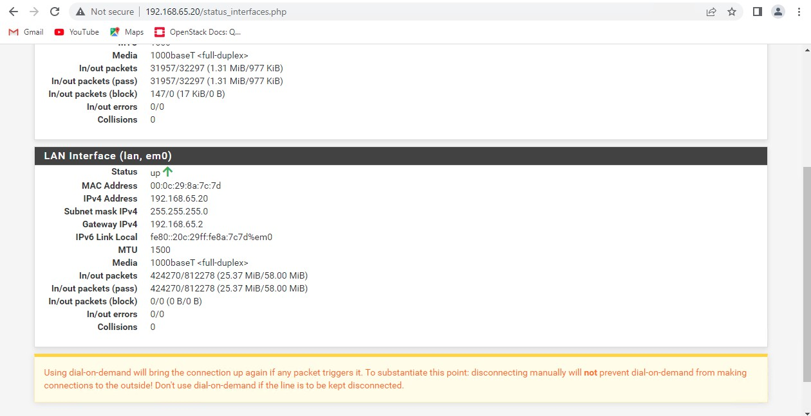

You are required to add/replace/remove services from the current network. Company president has asked to explain the need of major updates and upgrades to the network. In order to get approval of major upgrades to the network you have been tasked to setup a prototype network by senior admin. You need to come up with the following prototype network along with technical documentation and a rationale for your suggestions:
- Setup a prototype network with NIS as your central authentication server.
- Configure a Firewall to protect internal network. Explain if there are some other methods to enhance the security of your network.
- Setup a network share for internal users.
- Configure a master and a slave name server for your internal network.
- Configure a DHCP server for your internal network.
- With the exception of your firewall, NIS, DHCP server etc., all client machines must obtain their network configuration via DHCP. Any additional servers must obtain static IP addresses via DHCP.
- All employee users must be able to authenticate on any client machines using NIS and all users’ home directories must be automounted under /home.
- Find services which are vulnerable and replace them with protected services.
- Setup an FTP server, so that users may be able to upload the data as needed, exhibit the functionality with a simple method.
- Users must be able to send and receive local email (that is, email addressed to users within the company’s domain) from the client machines.
Develop network administrator’s utilities:
- Create a script that generates secure random password suggestions for internal users. Ask for details.
- In a Bash script, ask user to provide an IP address, also ask how many bits is the subnet mask. Now provide the following output:
- What class the IP address belongs to?
- Print subnet mask in decimal number system
- IP: 192.168.0.0
- SM: 255.255.255.0
1 Project Overview
1.1 Purpose of Document
The purpose of this document is to provide suggestions, solutions, and configurations for a major upgrade that will improve the current network.
1.2 Scope
The scope of the project involves an examination of the current network to ascertain where it can be improved. In addition, design and implemention of a prototype network to demonstrate what it could look like after the proposed upgrades. The proposed solutions must include detailed configurations and address potential growth of the business in the future.
2 Network Topology
2.1 Existing Network Design
The existing network utilizes 11 servers comprised of one (1) NIS authentication server, two (2) NFS file share servers, one (1) Telnet server, two (2) database servers, two (2) app servers, two (2) web servers, and one (1) backup server. ( See Figure 1 )

2.2 Proposed Network Topology
The proposed network utilizes 11 servers comprised of one (1) LDAP authentication server, one (1) Samba file share server, one (1) NFS file share server, two (2) database servers, two (2) app servers, two (2) web servers, one (1) backup server, and one (1) Firewall. ( See Figure 2 )

3 Upgrades
3.1 Server OS Upgrade
The existing servers are all running CentOS 5.0 currently which is starting to become old and losing community support. All servers should be upgraded to CentOS 7.0 as this will provide the most support while maintaining stronger stability that newer releases.3.2 LDAP Centralized Authentication Current network athentication is managed by a NIS server which only functions for Linux operating systems and passes sensitive information in plain text. The prototype network runs an LDAP server instead for many reasons. Eventually the Windows clients can be looped into the system to authenticate making it so that the total Linux and Windows structures would all be managed from the same place. In addition LDAP touts improved security as it utilizes TLS certifications to establish connections and pass information. The LDAP server can be used to authenticate against for all of the other services that the network contains.
3.2 Firewall Addition
No firewall is present with the existing network which places the system at significantly more risk. With the addition of a pfSense firewall in place all internal traffic is protected and blocked from the external. All traffic that accesses anything outside of the LAN, including and especially the internet, is routed through firewall so as to keep as small of an attack surface as possible.
3.4 Telnet & FTP
The current system utilizes Telnet for communications among servers which has been long recognized as very insecure and should not be used in production. Hence all Telnet services have been replaced with SSH servers so as to secure and encrypted communications. Having SSH servers allows us to take advantage of Secure Copy Protocol which will also replace the very insecure File Transfer Protocol servers the occupy the system now. Neither Telnet nor FTP servers should be used as long as we have better options like SSH and SCP available to us.
4 Configurations
4.1 LDAP Configuration
The LDAP server has an NFS server running on it to export the home directories to the client servers so that they can automount them when they login to various users. The LDAP structure has been generated on the LDAP server using the following ldif files and ens33 file… db.ldif, monitor.ldif, base.ldif, users.ldif, groups.ldif, ens33.
db.ldif
dn: olcDatabase={2}hdb,cn=config
changetype: modify
replace: olcSuffix
olcSuffix: dc=azuretech,dc=local
dn: olcDatabase={2}hdb,cn=config
changetype: modify
replace: olcRootDN
olcRootDN: cn=ldapadm,dc=azuretech,dc=local
dn: olcDatabase={2}hdb,cn=config
changetype: modify
replace: olcRootPW
olcRootPW: {SSHA}GBlGYcFck5dRl6+FwVlArdlJywiCsCfKmonitor.ldif
dn: olcDatabase={1}monitor,cn=config
changetype: modify
replace: olcAccess
olcAccess: {0}to * by dn.base="gidNumber=0+uidNumber=0,cn=peercred,cn=external,
cn=auth" read by dn.base="cn=ldapadm,dc=azuretech,dc=local" read by * nonebase.ldif
dn: dc=azuretech,dc=local
dc: azuretech
objectClass: top
objectClass: domain
dn: cn=ldapadm,dc=azuretech,dc=local
objectClass: organizationalRole
cn: ldapadm
description: LDAP Manager
dn: ou=People,dc=azuretech,dc=local
objectClass: organizationalUnit
ou: People
dn: ou=Group,dc=azuretech,dc=local
objectClass: organizationalUnit
ou: Groupusers.ldif
dn: uid=ldapuser1,ou=People,dc=azuretech,dc=local
uid: ldapuser1
cn: ldapuser1
sn: ldapuser1
mail: ldapuser1@azuretech.local
objectClass: person
objectClass: organizationalPerson
objectClass: inetOrgPerson
objectClass: posixAccount
objectClass: topobjectClass: shadowAccount
userPassword:
{crypt}
$6$SCUZRM.D$B4l.n2hipD4IvghGaaJiQtLkiOF62YS7PhDy30EpVd81noq4KkDU2EqORUW.
8Dq4k5GhPkChklxZIYiKMvcFx1
shadowLastChange: 19159
shadowMin: 0
shadowMax: 99999
shadowWarning: 7
loginShell: /bin/bash
uidNumber: 1000
gidNumber: 1000
homeDirectory: /home/ldapuser1
dn: uid=ldapuser2,ou=People,dc=azuretech,dc=local
uid: ldapuser2
cn: ldapuser2
sn: ldapuser2
mail: ldapuser2@azuretech.local
objectClass: person
objectClass: organizationalPerson
objectClass: inetOrgPerson
objectClass: posixAccount
objectClass: top
objectClass: shadowAccount
userPassword:
{crypt}
$6$CbncYy5y$JlNL4899lmlZAgqnLYersesFTLkFJNY6DQdNvwOFU8LyHNXPMMrfCaUo7Br
SdYw/KFlDOubpyn2b242re1Zea/
shadowLastChange: 19159
shadowMin: 0
shadowMax: 99999
shadowWarning: 7
loginShell: /bin/bash
uidNumber: 1001gidNumber: 1001
homeDirectory: /home/ldapuser2
dn: uid=ldapuser3,ou=People,dc=azuretech,dc=local
uid: ldapuser3
cn: ldapuser3
sn: ldapuser3
mail: ldapuser3@azuretech.local
objectClass: person
objectClass: organizationalPerson
objectClass: inetOrgPerson
objectClass: posixAccount
objectClass: top
objectClass: shadowAccount
userPassword:
{crypt}
$6$J5mrmTYw$bKruVOsucaiHJFS3S6MKG4jyC.o/P62DeLW/R.YVpktFaYlpHzjjjxIGW5HpA
msf5OCN9dId5s/F33HptMfvG0
shadowLastChange: 19159
shadowMin: 0
shadowMax: 99999
shadowWarning: 7
loginShell: /bin/bash
uidNumber: 1002
gidNumber: 1002
homeDirectory: /home/ldapuser3groups.ldif
dn: cn=ldapuser1,ou=Group,dc=azuretech,dc=local
objectClass: posixGroup
objectClass: top
cn: ldapuser1
userPassword: {crypt}x
gidNumber: 1000
dn: cn=ldapuser2,ou=Group,dc=azuretech,dc=local
objectClass: posixGroup
objectClass: top
cn: ldapuser2
userPassword: {crypt}x
gidNumber: 1001
dn: cn=ldapuser3,ou=Group,dc=azuretech,dc=local
objectClass: posixGroup
objectClass: top
cn: ldapuser3
userPassword: {crypt}x
gidNumber: 1002/etc/sysconfig/network-scripts/ifcfg-ens33
TYPE="Ethernet"
PROXY_METHOD="none"
BROWSER_ONLY="no"
BOOTPROTO="none"
DEFROUTE="yes"
IPV4_FAILURE_FATAL="no"
IPV6INIT="no"
#IPV6_AUTOCONF="yes"
#IPV6_DEFROUTE="yes"
#IPV6_FAILURE_FATAL="no"
#IPV6_ADDR_GEN_MODE="stable-privacy"
NAME="ens33"
UUID="93f56d12-8057-4ca0-af7f-6c8e6fcffccd"
DEVICE="ens33"
ONBOOT="yes"
IPADDR="192.168.65.10"
PREFIX="24"
GATEWAY="192.168.65.20"
DNS1="192.168.65.10"
DNS2="8.8.8.8"
DNS3="8.8.4.4"
DOMAIN="azuretech.local"4.2 LDAP Client Configuration
The LDAP Clients need to install some packing and create some automap files for autofs to automount LDAP user home directories. I used the follow script to accomplish this…
LDAP_Client_Install.sh
#!/bin/bash
yum install -y openldap-clients nss-pam-ldapd nfs-utils autofs
authconfig --enableldap --enableldapauth --ldapserver=192.168.65.10 --ldapbasedn="dc=azuretech,dc=local" --update
systemctl restart nslcd
setsebool -P use_nfs_home_dirs=1
echo "/home /etc/home.map" >> /etc/auto.master
echo "* -fstype=nfs,rw,nosuid,soft 192.168.65.10:/home/&" >> /etc/home.map
systemctl enable rpcbind
systemctl start rpcbind
systemctl enable autofs
systemctl start autofs
exit4.3 Firewall Configuration
Configured as seen in figures below. ( See Figure 3, Figure 4, & Figure 5)



4.4 DNS Master Server Configuration
The DNS master server was installed on the same server as the LDAP so it is referred to as LDAP in the configuration files. The main config, the forward zone, and the reverse zone files shown below…
/etc/named.conf
//
// named.conf
//
// Provided by Red Hat bind package to configure the ISC BIND named(8) DNS
// server as a caching only nameserver (as a localhost DNS resolver only).
//
// See /usr/share/doc/bind*/sample/ for example named configuration files.
//
// See the BIND Administrator's Reference Manual (ARM) for details about the
// configuration located in /usr/share/doc/bind-{version}/Bv9ARM.html
options {
listen-on port 53 { 127.0.0.1; 192.168.65.10; };
// listen-on-v6 port 53 { ::1; };
directory"/var/named";
dump-file"/var/named/data/cache_dump.db";
statistics-file "/var/named/data/named_stats.txt";
memstatistics-file "/var/named/data/named_mem_stats.txt";
recursing-file "/var/named/data/named.recursing";
secroots-file "/var/named/data/named.secroots";
allow-query { localhost; 192.168.65.0/24; };
allow-transfer { localhost; 192.168.65.11; };
/*
- If you are building an AUTHORITATIVE DNS server, do NOT enable recursion.
- If you are building a RECURSIVE (caching) DNS server, you need to enable
recursion.
- If your recursive DNS server has a public IP address, you MUST enable access
control to limit queries to your legitimate users. Failing to do so will
cause your server to become part of large scale DNS amplification
attacks. Implementing BCP38 within your network would greatly
reduce such attack surface
*/
recursion no;
dnssec-enable yes;
dnssec-validation yes;
// dnssec-lookaside auto;
/* Path to ISC DLV key */
bindkeys-file "/etc/named.root.key";managed-keys-directory "/var/named/dynamic";
pid-file "/run/named/named.pid";
session-keyfile "/run/named/session.key";
};
logging {
channel default_debug {
file "data/named.run";
severity dynamic;
};
};
zone "." IN {
type hint;
file "named.ca";
};
zone "azuretech.local" IN {
type master;
file "forward.azuretech";
allow-update { none; };
};
zone "65.168.192.in-addr.arpa" IN {
type master;
file "reverse.azuretech";
allow-update { none; };
};
include "/etc/named.rfc1912.zones";
include "/etc/named.root.key";/var/named/forward.azuretech
$TTL 86400
@ IN SOA ldap.azuretech.local. root.azuretech.local. (
2022061101 ; serial
3600; refresh
1800; retry
604800 ; expire
86400 ) ; minimum TTL
;Name Servers
IN NS ldap.azuretech.local. ; Master
IN NS samba.azuretech.local. ; Slave
IN A 192.168.65.10 ; Name Server to IP resolve
IN A 192.168.65.11
ldap IN A 192.168.65.10 ; Host
samba IN A 192.168.65.11 ; Host
nfs IN A 192.168.65.12 ; Client
backup IN A 192.168.65.13 ; Client
db1 IN A 192.168.65.14 ; Client
db2 IN A 192.168.65.15 ; Client
app1 IN A 192.168.65.16 ; Client
app2 IN A 192.168.65.17 ; Client
web1 IN A 192.168.65.18 ; Client
web2 IN A 192.168.65.19 ; Client
firewall IN A 192.168.65.20 ; Firewall/var/named/reverse.azuretech
$TTL 86400
@ IN SOA ldap.azuretech.local. root.azuretech.local. (
2022061101 ; serial
3600; refresh
1800; retry
604800 ; expire
86400 ) ; minimum TTL
;Name Servers
IN NS ldap.azuretech.local. ; Master
IN NS samba.azuretech.local. ; Slave
IN PTR azuretech.local.
;Record (IP) points to hostname
ldap IN A 192.168.65.10 ; Master Nameserver
samba IN A 192.168.65.11 ; Slave Nameserver
nfs IN A 192.168.65.12 ; Client
backup IN A 192.168.65.13 ; Client
db1 IN A 192.168.65.14 ; Client
db2 IN A 192.168.65.15 ; Client
app1 IN A 192.168.65.16 ; Client
app2 IN A 192.168.65.17 ; Client
web1 IN A 192.168.65.18 ; Client
web2 IN A 192.168.65.19 ; Client
firewall IN A 192.168.65.20 ; Firewall
10 IN PTR ldap.azuretech.local.
11 IN PTR samba.azuretech.local.
12 IN PTR nfs.azuretech.local.
13 IN PTR backup.azuretech.local.
14 IN PTR db1.azuretech.local.
15 IN PTR db2.azuretech.local.
16 IN PTR app1.azuretech.local.
17 IN PTR app2.azuretech.local.
18 IN PTR web1.azuretech.local.
19 IN PTR web2.azuretech.local.
20 IN PTR firewall.azuretech.local.4.5 DNS Slave Server Configuration
The DNS slave server was installed on the same server as the Samba, so it is referred to as samba in the configuration files. The main config file is shown below…
/etc/name.conf
//
// named.conf
//
// Provided by Red Hat bind package to configure the ISC BIND named(8) DNS
// server as a caching only nameserver (as a localhost DNS resolver only).
//
// See /usr/share/doc/bind*/sample/ for example named configuration files.
//
// See the BIND Administrator's Reference Manual (ARM) for details about the
// configuration located in /usr/share/doc/bind-{version}/Bv9ARM.html
options {
listen-on port 53 { 127.0.0.1; 192.168.65.11; };
// listen-on-v6 port 53 { ::1; };
directory"/var/named";
dump-file"/var/named/data/cache_dump.db";
statistics-file "/var/named/data/named_stats.txt";
memstatistics-file "/var/named/data/named_mem_stats.txt";
recursing-file "/var/named/data/named.recursing";
secroots-file "/var/named/data/named.secroots";
allow-query { localhost; 192.168.65.0/24; };
/*
- If you are building an AUTHORITATIVE DNS server, do NOT enable recursion.
- If you are building a RECURSIVE (caching) DNS server, you need to enable
recursion.
- If your recursive DNS server has a public IP address, you MUST enable access
control to limit queries to your legitimate users. Failing to do so will
cause your server to become part of large scale DNS amplification
attacks. Implementing BCP38 within your network would greatly
reduce such attack surface
*/
recursion no;
dnssec-enable yes;
dnssec-validation yes;
/* Path to ISC DLV key */
bindkeys-file "/etc/named.root.key";
managed-keys-directory "/var/named/dynamic";
pid-file "/run/named/named.pid";
session-keyfile "/run/named/session.key";
};
logging {
channel default_debug {
file "data/named.run";
severity dynamic;
};
};
zone "." IN {
type hint;
file "named.ca";
};
zone "azuretech.local" IN {
type slave;
file "slaves/azuretech.fwd.zone";
masters { 192.168.65.10; };
};
zone "65.168.192.in-addr.arpa" IN {
type slave;
file "slaves/azuretech.rev.zone";
masters { 192.168.65.10; };
};
include "/etc/named.rfc1912.zones";
include "/etc/named.root.key";4.6 DHCP Server Configuration
The DHCP server was installed on the same server as the LDAP. The main config file is shown below…
/etc/dhcp/dhcpd.conf
#
# DHCP Server Configuration file.# see /usr/share/doc/dhcp*/dhcpd.conf.example
# see dhcpd.conf(5) man page
#
option domain-name "azuretech.local";
option domain-name-servers ldap.azuretech.local, samba.azuretech.local, 8.8.8.8, 8.8.4.4;
default-lease-time 86400; # 24 hours
max-lease-time 604800; # One week
# Use this to enble / disable dynamic dns updates globally.
#ddns-update-style none;
# If this DHCP server is the official DHCP server for the local
# network, the authoritative directive should be uncommented.
authoritative;
subnet 192.168.65.0 netmask 255.255.255.0 {
range 192.168.65.21 192.168.65.100;
option domain-name-servers 192.168.65.10, 192.168.65.11, 8.8.8.8, 8.8.4.4;
option domain-name "azuretech.local";
option routers 192.168.65.2;
option subnet-mask 255.255.255.0;
option broadcast-address 192.168.65.255;
}
host nfs {
hardware ethernet 00:0c:29:08:dc:1c;
fixed-address 192.168.65.12;
}
host backup {
hardware ethernet 00:0c:29:0e:59:b4;
fixed-address 192.168.65.13;
}
host db1 {
hardware ethernet 00:0c:29:d1:f5:0c;
fixed-address 192.168.65.14;
}
host db2 {
hardware ethernet 00:0c:29:95:46:a9;
fixed-address 192.168.65.15;
}
host app1 {
hardware ethernet 00:0c:29:83:8c:60;
fixed-address 192.168.65.16;
}
host app2 {
hardware ethernet 00:0c:29:f2:40:5c;
fixed-address 192.168.65.17;
}
host web1 {
hardware ethernet 00:0c:29:a7:d9:38;
fixed-address 192.168.65.18;
}
host web2 {
hardware ethernet 00:0c:29:e9:fa:2b;
fixed-address 192.168.65.19;
}4.7 NFS Server Configuration
The NFS server’s export file and client fstab config file are shown below…
/etc/exports
/nfsfileshare 192.168.65.0/24(rw,sync,no_root_squash)/etc/fstab
#
# /etc/fstab
# Created by anaconda on Wed May 11 18:06:18 2022
#
# Accessible filesystems, by reference, are maintained under '/dev/disk'
# See man pages fstab(5), findfs(8), mount(8) and/or blkid(8) for more info
#
/dev/mapper/centos-root / xfs defaults 00
UUID=747f3e8d-9501-43e8-9ed3-3fae6fea9f23 /boot xfs defaults 00
/dev/mapper/centos-swap swap swap defaults 00
nfs:/nfsfileshare /mnt/nfsfileshare nfs nosuid,rw,sync,hard,intr 004.8 Samba Server Configuration
The Samba server’s interface config and smb.conf files are shown below…
/etc/sysconfig/network-scripts/ifcfg-ens33
TYPE="Ethernet"
PROXY_METHOD="none"
BROWSER_ONLY="no"
BOOTPROTO="none"
DEFROUTE="yes"
IPV4_FAILURE_FATAL="no"
IPV6INIT="no"
#IPV6_AUTOCONF="yes"
#IPV6_DEFROUTE="yes"
#IPV6_FAILURE_FATAL="no"
#IPV6_ADDR_GEN_MODE="stable-privacy"
NAME="ens33"
UUID="eb0d3098-d1cd-4d11-9e74-e7478d56b0c5"
DEVICE="ens33"
ONBOOT="yes"
IPADDR="192.168.65.11"
PREFIX="24"
GATEWAY="192.168.65.20"
DNS1="192.168.65.10"
DNS2="192.168.65.11"
DNS3="8.8.8.8"
DNS4="8.8.4.4"
DOMAIN="azuretech.local"/etc/samba/smb.conf
# See smb.conf.example for a more detailed config file or
# read the smb.conf manpage.
# Run 'testparm' to verify the config is correct after
# you modified it.
[global]
workgroup = SAMBA
security = user
passdb backend = tdbsam
printing = cups
printcap name = cups
load printers = yes
cups options = raw
[homes]
comment = Home Directories
valid users = %S, %D%w%S
browseable = No
read only = No
inherit acls = Yes
[printers]
comment = All Printers
path = /var/tmp
printable = Yes
create mask = 0600
browseable = No
[print$]
comment = Printer Drivers
path = /var/lib/samba/drivers
write list = @printadmin root
force group = @printadmin
create mask = 0664
directory mask = 0775
[smb]
path = /samba
browseable = yes
read only = no
force create mode = 0660
force directory mode = 2770
valid users = smb @sadmin4.9 Email Server Configuration
The email servers’ were installed on the samba server machine and that is why it is labelled as samba in the config files. The Postfix and Dovecot config file alterations are shown below…
/etc/postfix/main.cf
# line 75: uncomment and specify hostname
myhostname = samba.azuretech.local
# line 83: uncomment and specify domain name
mydomain = azuretech.local
# line 99: uncomment
myorigin = $mydomain
# line 116: change
inet_interfaces = all
# line 164: add
mydestination = $myhostname, localhost.$mydomain, localhost, $mydomain
# line 264: uncomment and specify your local network
mynetworks = 192.168.65.0/24
# line 419: uncomment (use Maildir)
home_mailbox = Maildir/
# line 574: add
smtpd_banner = $myhostname ESMTP
# add follows to the end
# limit an email size with 10M
message_size_limit = 10485760/etc/dovecot/dovecot.conf
# line 24: uncomment
protocols = imap pop3 lmtp
# line 30: uncomment and change ( if not use IPv6 )
listen = */etc/dovecot/conf.d/10-auth.conf
# line 10: uncomment and change ( allow plain text auth )
disable_plaintext_auth = no
# line 100: add
auth_mechanisms = plain login/etc/dovecot/conf.d/10-mail.conf
# line 30: uncomment and add
mail_location = maildir:~/Maildir/etc/dovecot/conf.d/10-master.conf
# line 96-98: uncomment and add like follows
# Postfix smtp-auth
unix_listener /var/spool/postfix/private/auth {
mode = 0666
user = postfix
group = postfix
}/etc/dovecot/conf.d/10-ssl.conf
# line 8: change (not require SSL)
ssl = no5 Network Administrator’s Utilities
5.1 Password Generator Script
As an administration tool I created a random password generator script that asks how long you want the password to be. After it generates the password is asks if the user wants to output it into a file and if so, what should the file name be. The bash script code for the file is below…
passwdgen_script.sh
#!/bin/bash
#This is a script for generating secure random password suggestions for users
echo -e "\n****** Secure Random Password Generator ******\n\nLet's generate a random password...\n\nHow long would you like your password to be?\n\nCharacter Length: "
read length
passwd=`echo $RANDOM | md5sum | head -c ${length}`
echo -e "\nPassword Suggestion: ${passwd}\n\nWould you like to store this password in a file? (y/n): "
answer=null
while [ ${answer} != y ] || [ ${answer} != n ]; do
read answer
if [ ${answer} = "y" ]; then
echo -e "\nWhat would you like you filename to be?: "
read filenm
echo ${passwd} > ${filenm}
echo -e "\nFile has been saved in the current working directory... Goodbye!\n"
return
elif [ ${answer} = "n" ]; then
echo -e "\nOk... Gooodbye!\n"
return
else
echo -e "\nNot a valid answer, try again.. You must choose either (y/n): \r"
fi
done
return5.2 IP Address Script
As an administration tool I created an IP address script that asks you for an IP address. Then it asks the user for the subnet mask in bits and after which it prints the given IP address’ classification along with the subnet mask in decimal format. Thoughout the script if the user gives the wrong output it tells the user what they did wrong and lets them try the input again. The bash script code for the file is below…
ipaddr_script.sh
#!/bin/bash
#This script informs users about IP address class
echo -e "\n\n****** IP Address Classification ******\n"
ipaddr=null
while ! [[ ${ipaddr} =~ .[0-9] ]] || [ ${#ipaddr} -gt 15 ] || [ ${#ipaddr} -lt 7 ] || [ ${firstoct} -lt 1 ] || [ ${firstoct} -gt 255 ] || [ ${secoct} -lt 1 ] || [ ${secoct} -gt 255 ] || [ ${thirdoct} -lt 1 ] || [ ${thirdoct} -gt 255 ] || [ ${fourthoct} -lt 1 ] || [ ${fourthoct} -gt 255 ]; do
echo -e "\nProvide IP Address: "
read ipaddr
firstoct=`echo ${ipaddr} | awk -F'.' '{print $1}'`
secoct=`echo ${ipaddr} | awk -F'.' '{print $2}'`
thirdoct=`echo ${ipaddr} | awk -F'.' '{print $3}'`
fourthoct=`echo ${ipaddr} | awk -F'.' '{print $4}'`
if [ ${#ipaddr} -gt 15 ]; then
echo -e "\nIP address is too long, try again..."
elif [ ${#ipaddr} -lt 7 ]; then
echo -e "\nIP address is too short, try again..."
elif ! [[ ${ipaddr} =~ .[0-9] ]]; then
echo -e "\nMust be a number, try again..."
elif [ ${firstoct} -lt 1 ] || [ ${firstoct} -gt 255 ] || [ ${secoct} -lt 1 ] || [ ${secoct} -gt 255 ] || [ ${thirdoct} -lt 1 ] || [ ${thirdoct} -gt 255 ] || [ ${fourthoct} -lt 1 ] || [ ${fourthoct} -gt 255 ]; then
echo -e "\nEach octect must be a number between 1-255, try again..."
fi
done
sbmask=null
while ! [[ ${sbmask} =~ [0-9] ]] || [ ${sbmask} -gt 32 ] || [ ${sbmask} -lt 1 ]; do
echo -e "\nHow many bits is the subnet mask?:"
read sbmask
if [ ${sbmask} -gt 32 ]; then
echo -e "\nThere are only 32 bits in a subnet mask, try again..."
elif [ ${sbmask} -lt 1 ]; then
echo -e "\nMust have at least 1 bit in the subnet mask, try again..."
elif ! [[ ${sbmask} =~ [0-9] ]]; then
echo -e "\nMust be a number, try again..."
fi
done
if [ ${firstoct} -gt 0 ] && [ ${firstoct} -lt 128 ]; then
echo -e "\n** CLASS A ADDRESS **"
elif [ ${firstoct} -gt 127 ] && [ ${firstoct} -lt 192 ]; then
echo -e "\n** CLASS B ADDRESS **"
elif [ ${firstoct} -gt 191 ] && [ ${firstoct} -lt 224 ]; then
echo -e "\n** CLASS C ADDRESS **"
elif [ ${firstoct} -gt 223 ] && [ ${firstoct} -lt 240 ]; then
echo -e "\n** CLASS D ADDRESS **"
elif [ ${firstoct} -gt 239 ] && [ ${firstoct} -lt 256 ]; then
echo -e "\n** CLASS E ADDRESS **"
else
return
fi
echo -e "\nIP Address: ${ipaddr}"
M=$(( 0xffffffff ^ ((1 << (32-sbmask)) -1) ))
echo -e "\nSubnet Mask: $(( (M>>24) & 0xff )).$(( (M>>16) & 0xff )).$(( (M>>8) & 0xff )).$(( M & 0xff ))"
echo -e "\nGoodbye!\n"
return6 Security
6.1 Firewalld & SELinux
Many turn firewalld off to make it easier to configure their services but it is far better to add the port rules that you need to each server for their respective services. In addition, it is a better practice to keep SELinux enabled and to change the security contexts where needed. Throughout the server configuration process these systems were constantly adjusted in the prototype network to allow the services to run but were never disabled. This ensures that the network is as hardened as it can be to intruders.
Appendix
References
NFS
NFS - Windows
https://it.umn.edu/services-technologies/how-tos/network-file-system-nfs-mount-nfs-share
LDAP
LDAP Local User Migration
https://www.itzgeek.com/how-tos/linux/centos-how-tos/migrate-local-users-ldap-accounts.html
LDAP Automount Home Directories
LDAP TLS
https://www.golinuxcloud.com/configure-openldap-with-tls-certificates/
Samba
https://linuxize.com/post/how-to-install-and-configure-samba-on-centos-7/
Postfix Server
Dovcote Server
https://www.server-world.info/en/note?os=CentOS_7&p=mail&f=2